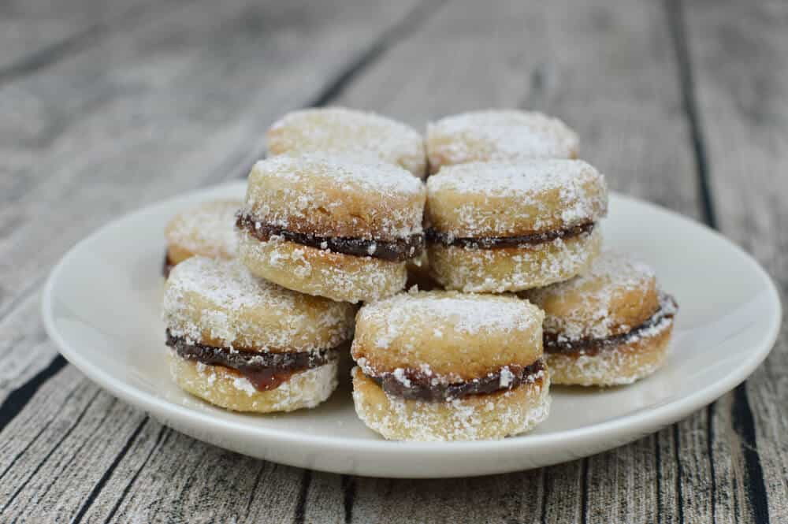

Potrebno je:
Umutiti 250 g putera sa 1 kašikom masti, dodati 1 celo jaje i 2 žumanceta i 250 g šećera. U to dodati jedan limun sok i koru, 500 g brašna i 1 prašak za pecivo, po potrebi možete dodati još brašna, da testo bude glatko i ne ljepljivo za ruke.
Testo razvući oklagijom debljine 1 cm i vaditi sa malom čašom vanilice. Peći na 180 C, 20 minuta. Prijatno!